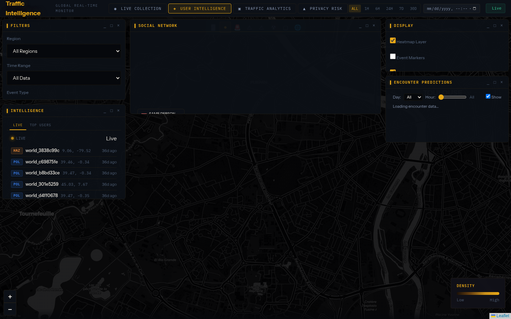
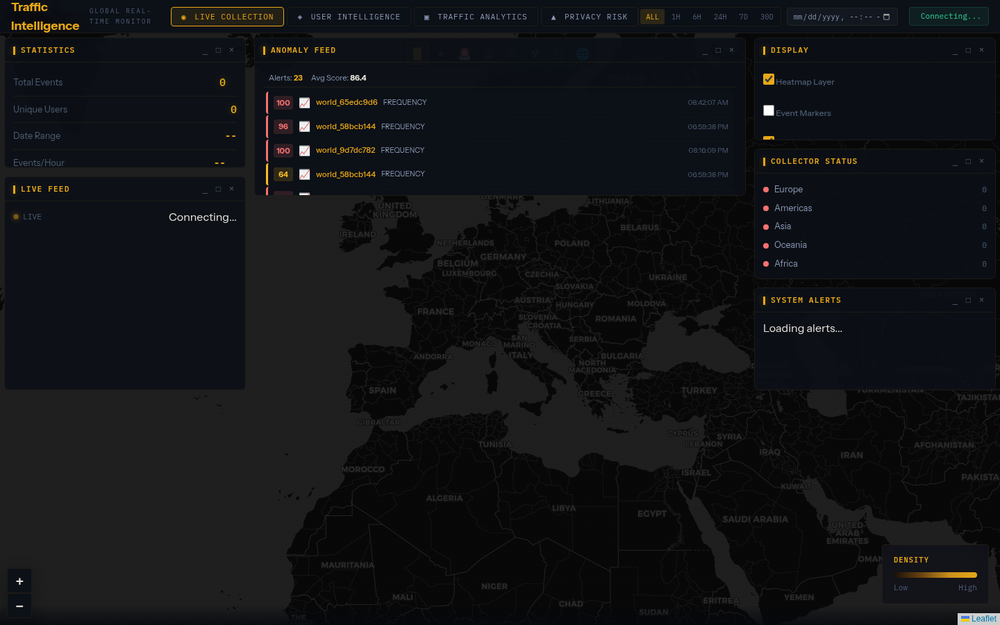
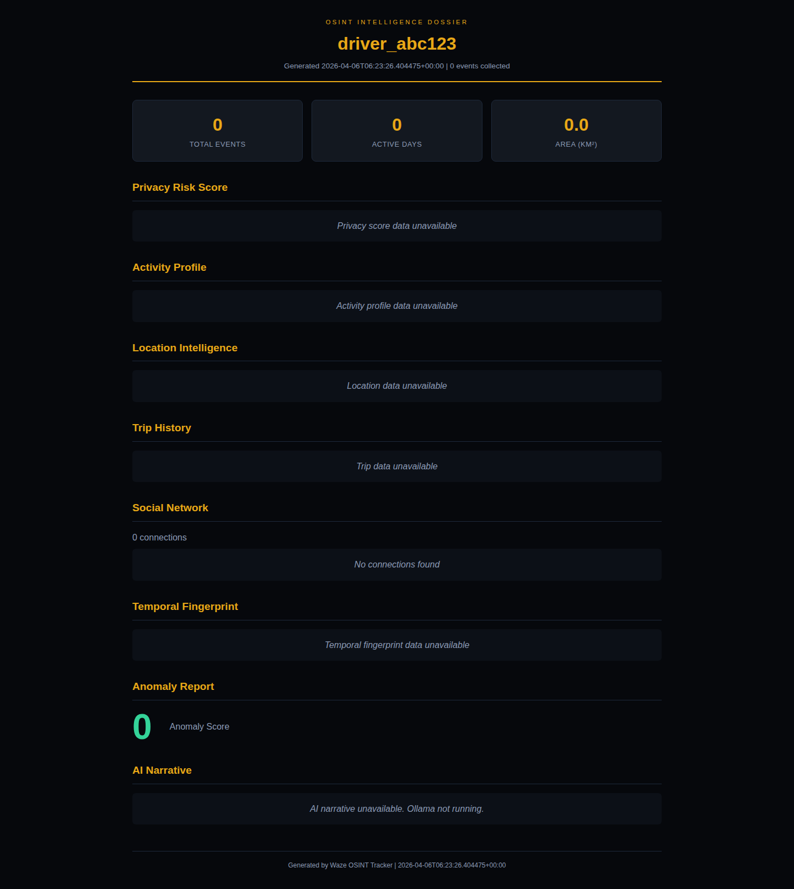
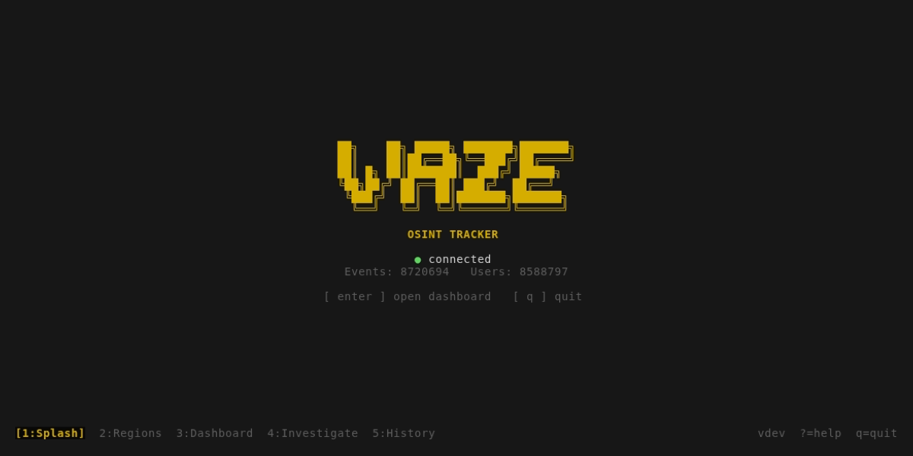
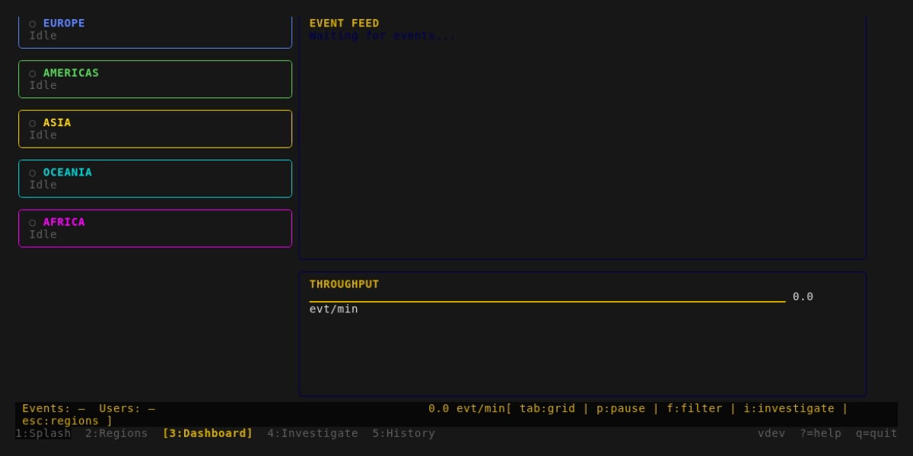
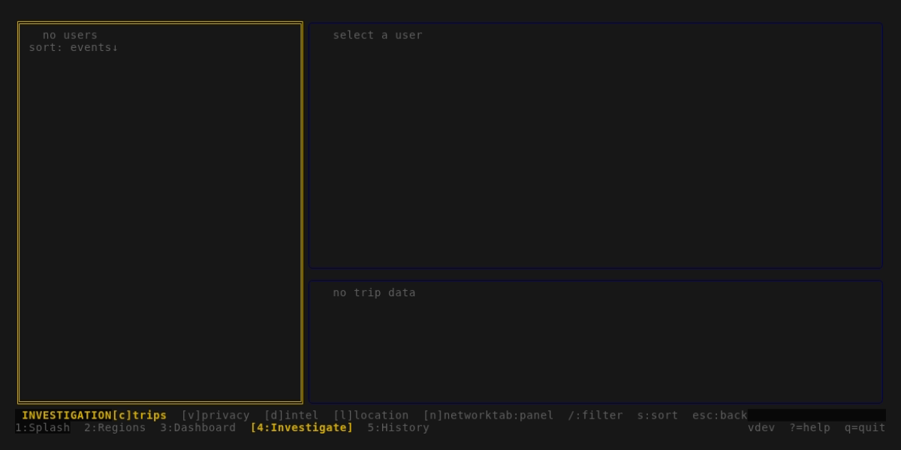
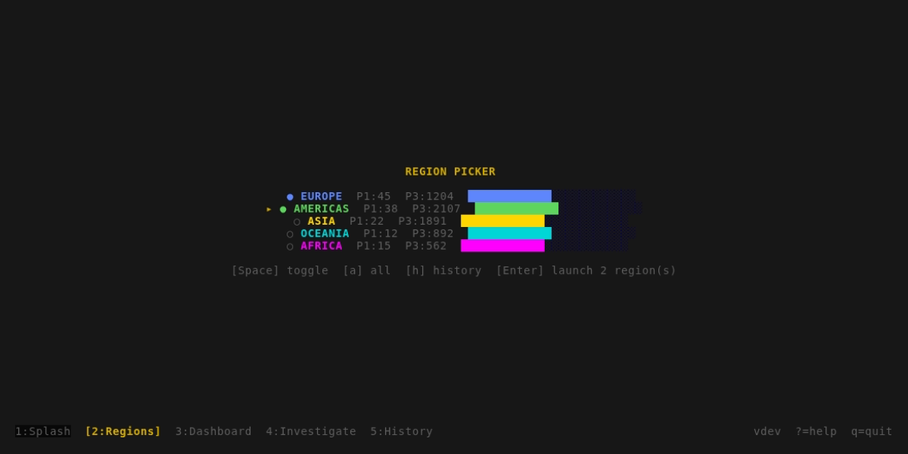

Four new visualization layers that connect 12+ disconnected intelligence modules into interactive, real-time experiences across web and terminal interfaces.
Before: 12+ modules computing sophisticated analysis with zero visualization. After: every module wired to interactive frontend.
Zero new Python dependencies. All frontend via CDN (D3.js, Leaflet, Chart.js). No database schema changes.
D3.js force-directed graph with community detection and ego networks

Leaflet heatmap overlay with 168-bin temporal controls
SSE-streamed anomaly detection with geofence integration

Self-contained HTML intelligence report fusing all modules

Full-screen Go TUI with the same amber/gold palette. Connects to Flask API for all intelligence features.



